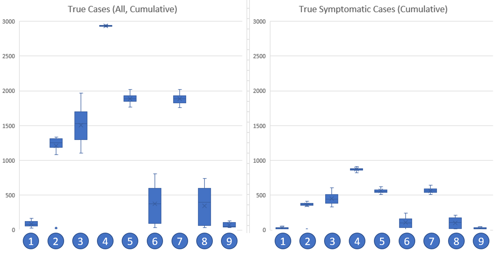

Luminesim Simulation and Analytics
June 2020
www.luminesim.com
This work has not been peer reviewed and is presented solely for the information and interest of the Regional COVID-19 Response Simulation community. Never change your local COVID-19 response strategy without direct instruction and approval from regional, provincial, and federal health authorities.
This experiment summarizes the results of RCRS in the Unity, Saskatchewan region and surrounding rural municipality of Round Valley No. 410. The effect of different COVID-19 responses is tested in the wake of a large outbreak. The community picks one set of interventions to adhere to regardless of consequences, and the number of true cases -- i.e. the number of cases that would be found if 100% of the community was tested -- is recorded and reported.
RCRS is seeded with the population of Unity, SK and Round Valley No. 410 according to 2016 census figures. To avoid confusion with the province's current reopening strategy, counterfactual scenarios are explored where the simulation begins on 15 April 2020. When the simulation starts, an outbreak occurs in all of Unity's employers with at least 10 people followed by a new, random COVID-19 infection each day for the first week of the simulation; this approach is used to reduce sensitivity to initial conditions and ensure an outbreak (e.g. infecting an infant is less likely to trigger an outbreak than infecting someone at one of the town's major grocery stores) while still introducing some randomness into those initially infected. The area's residents are then assigned a COVID-19 response strategy to employ. The outcomes of each strategy, which are followed immediately and consistently to the end of the simulation, are reported. These strategies are given below.
Note that the percentages used for each intervention (i.e. intervention strength or efficacy) have been selected by the team; as intervention strength decreases, projected COVID-19 cases are likely to increase. Base parameter values can be found in the central RCRS documentation. For the purpose of this document, "community location" is a catch-all term for workplaces and schools used for any purpose (e.g. working hours, shopping location, social gatherings at after-school activity, etc.).
For simplicity, all community members fully and immediately commit to these policy changes regardless of outcome.
The model revision used in this experiment is dev/fe012aaca51207a0bd6fa16d395d0ac2f9f81815
Results can be seen in the following chart and accompanying data table; each intervention is numbered according to the list in Method section.

True Cases (All, Cumulative)
| Experiment | Mean | Standard Deviation |
|---|---|---|
| 1 | 88.6 | 39.4 |
| 2 | 1209.6 | 232.6 |
| 3 | 1506.7 | 242.0 |
| 4 | 2933.6 | 6.6 |
| 5 | 1883.5 | 62.4 |
| 6 | 374.9 | 243.1 |
| 7 | 1883.2 | 65.4 |
| 8 | 347.7 | 254.9 |
| 9 | 69.4 | 33.3 |
True Symptomatic Cases (Cumulative)
| Experiment | Mean | Standard Deviation |
|---|---|---|
| 1 | 26.9 | 13.8 |
| 2 | 360.0 | 69.3 |
| 3 | 450.8 | 77.8 |
| 4 | 873.7 | 21.4 |
| 5 | 559.5 | 30.4 |
| 6 | 106.2 | 72.7 |
| 7 | 566.0 | 34.9 |
| 8 | 98.9 | 74.5 |
| 9 | 22.0 | 11.2 |
Unsurprisingly, the interventions with the least COVID-19 cases were those where current policies are left in place (Scenario 1) or where current policies are supplemented with masks (Scenario 9). The worst performing policy is to remove all interventions (Scenario 4), which, if no response is taken even in light of an outbreak, consumes the entire region. The best strategy for reopening partially or fully includes masks (Scenarios 6 and 8) on top of all existing preventative measures (social distancing, handwashing, surface decontamination), which is in line with existing studies showing the efficacy of masks. In between these extremes lies reopening schools and/or community locations such as businesses (Scenarios 2, 5, and 7) without masks, which leaves a much higher risk of widespread outbreak. Similarly, removing preventative measures (Scenario 3) leaves the community open to infection.
The results of retaining all interventions (Scenario 1) is unsurprising. With people largely isolated and heavy prevention in place, COVID-19 has difficulty gaining a foothold in the community. Adding masks (Scenario 9) only marginally improves this specific scenario: since people aren't being infected anyway, masks can only do so little. Scenario 4 -- no interventions -- is similarly unsurprising in that full, unprotected contact in a community that regularly engages in social contact causes COVID-19 to spread rapidly. While near-100% spread is unlikely in the real world due to likely self-isolation in response to an outbreak, COVID-19 can spread widely even with preventative measures in place. For example, New York City may have more than 20% of their population infected despite preventative measures: while the Unity region is clearly not as dense as New York City, outbreaks in rural USA indicate that density may not be the defining factor in outbreak size.
If stay-at-home policies end, our results indicate that masks may provide substantial benefit (Scenarios 6 and 8). A large outbreak can sometimes be entirely prevented or substantially reduced when compared with the no-mask equivalents (Scenarios 5 and 7). Note, however, that these scenarios explored universal mask usage outside the home: partial mask usage may be substantially less effective.
Continued community vigilance is suggested by simulation results: even with limited contact due to stay-at-home policies, removing social distancing, handwashing, and surface decontamination allows the infection to spread (Scenario 3). Public places allow infection to be acquired, which then spreads in the home, which then reinforces the rate at which infection can be spread and acquired in public places.
Scenario 2 -- the return of schools -- is a result wherein more research is required. Excluding hospitalization and death rates, which are known to be lower for youth, RCRS assumes that the rate of infection spread and development of symptoms is identical for youth and adults. There is a myriad of debate on the subject of youth susceptibility and spread of COVID-19; until this debate is resolved, Scenario 2's results should be interpreted as a pessimistic scenario that warrants continued caution.
As only some COVID-19 infections develop symptoms, the number of symptomatic cases is always smaller than the total number of cases. This has implications for identifying an outbreak in the real world. In these scenarios, we report the true number of cases (symptomatic or otherwise); in the real world, only a subset of these cases are likely to be identified, which, anecdotally, is likely to be skewed towards identifying those with symptoms. A real-world outbreak would therefore be reported with much smaller numbers than the true number of cases, and thus a "small" outbreak identified through incomplete testing of symptomatic people should be taken extremely seriously. Some sources have suggested that there can be a 1:10 ratio between the number of reported and actual cases if testing is sparse: 300 positive tests in a region with approximately 3000 people is therefore cause for serious concern.
The experiment assumes three critical items in addition to the other factors in RCRS:
As stated in prior sections, these limitations mean results should be interpreted as pessimistic outcomes: rapid self-isolation and closure of non-essential facilities following an outbreak could -- if rapidly implemented -- reduce outbreak severity.
While the simulation calculates hospitalization and death rates, we do not report these figures due to the size of the community.
Our results suggest that there is good reason to be cautious and respond rapidly to a COVID-19 outbreak. By entirely removing the current suite of interventions, an outbreak left unchecked could consume the entire community; by retaining all current interventions, our results suggest that outbreaks are dramatically reduced. As interventions are removed, the risk of a large outbreak increases. Our results also suggest that the addition of masks could counteract this risk assuming they are widely and consistently adopted and properly used. While our results show a large risk in reopening schools, the ongoing debate about how youth develop and spread COVID-19 means that this scenario requires further data to confidently suggest action. If youth do not readily spread COVID-19 this may reduce the outbreak size in other scenarios.
We are immensely thankful to those who donated to our GoFundMe campaign and the even larger group who shared it. We are able to spend more time on the model thanks to their contributions.
We have no conflicts of interest to declare. The Town of Unity was not involved in producing these results nor did it commission them. These results should not be taken as an endorsement from the Town of Unity nor surrounding rural municipalities. These results have not been peer reviewed. Never change your local COVID-19 response strategy without direct approval from regional, provincial, and federal health authorities.